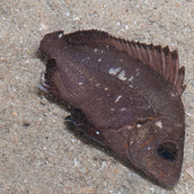
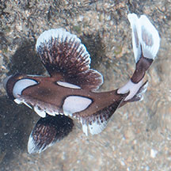
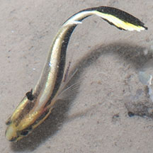

|
|
| fishes text index | photo index |
| Phylum Chordata > Subphylum Vertebrate > fishes |
| Sweetlips Family Haemulidae updated Sep 2020 Where seen? These thick-lipped fishes are sometimes seen on some of our shores. They usually hide during the day and are more active at night. What are sweetlips? Sweetlips belong to Family Haemulidae. According to FishBase: the family comprises of 17 genera and 150 species. They are found in the Atlantic, Indian and Pacific Oceans. Members of the family also called grunts or grunters. Members that belong to the genus Plectorhinchus are called sweetlips because of their thick lips. Features: Most sweetlips go through elaborate colour changes as they mature. The juveniles are often boldly spotted or striped, growing up to become adults that are totally different; usually plain with small spots or many thin lines. Some young sweetlips like the Harlequin sweetlips and Painted sweetlips typically swim by 'wagging' their large tails resulting in a twisting motion. What do they eat? Young fishes eat plankton but grow up to be carnivorous adults, feeding on small fishes and small animals living on on the sea bottom. These fishes have teeth not only in the jaws but also in their throats. Human uses: Some species are considered valuable seafoood. They are caught by spear, line and nets; and marketed fresh or salted. |
| Some Sweetlips on Singapore shores |
 Brown sweetlips |
 Harlequin sweetlips |
 Painted sweetlips |
| Family
Haemulidae recorded for Singapore from Wee Y.C. and Peter K. L. Ng. 1994. A First Look at Biodiversity in Singapore. *Lim, Kelvin K. P. & Jeffrey K. Y. Low, 1998. A Guide to the Common Marine Fishes of Singapore. ^from WORMS +Other additions (Singapore Biodiversity Record, etc)
|
Links
|